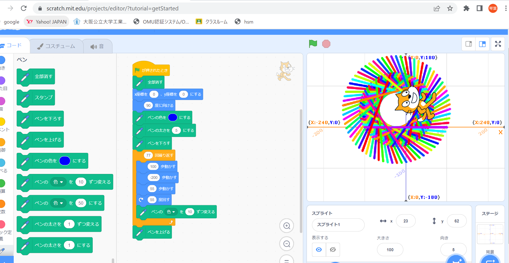
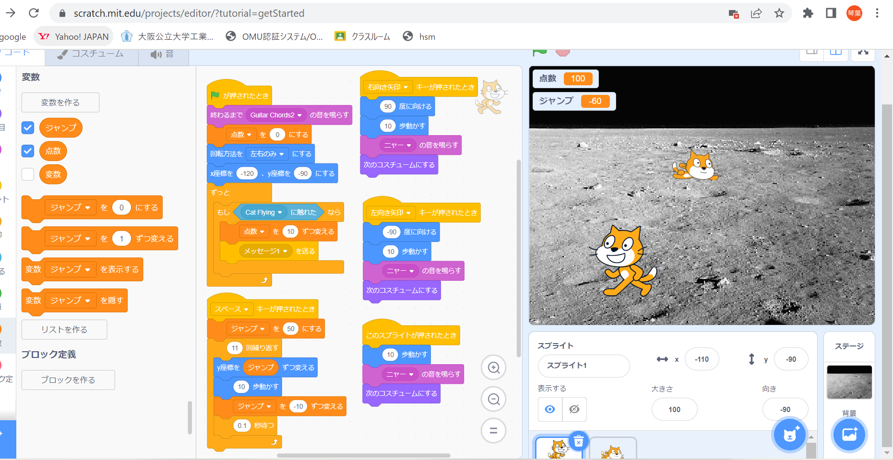

1週目のレポート ： 公大高専１年実習I-1
3B班24番 凡人28号
第1週目
1-1 サイエンスアート

1.内容
スクラッチを使って模様を描くプログラムを作った。猫が座標平面状を上下に動いたり角度を変えたりするようにプログラムし、動いた軌道をペンで書き示すことによって模様が浮かび上がる仕組みになっている。
2.感想
一度ベースを作ったら、回転速度や回転数、ペンの太さなどの値を少し変えるだけで全く別の模様ができたので不思議だった。何回か作成してみたが、見当違いの形ができたり、案外何も考えず設定した値で綺麗な模様ができたりしたので、面白かった。
1-2 ゲーム

1.内容
上から物が落ちてくるので、それを猫がキャッチするように動かすゲームを作成した。動かす方法はキーボードの矢印ボタンで、スペースボタンを押すと、ジャンプすることができる。キャッチするとポイントが入る。
2.感想
以前にこのようなゲームを作ったことがあったので、比較的苦労せずに作ることができた。乱数で落ちてくる速さや場所を変えることができるという便利さが分かったので、もしゲームを作る機会があれば、有効活用してみようと思う。できたゲームは簡単すぎて、クソゲーに近いので改善してみようと思う。
1-3 ホームページ作成
私のホームページ
1.内容
自分のホームページを作成した。URLを検索することによってそのホームページを表示することができる。
2.感想
ホームページを自分で作れることに驚いた。しかも作業自体はマニュアル通りに進めていくとすぐに作成することができ案外簡単だったことにも驚いた。